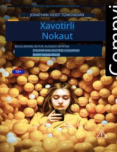

BASmartfonlar va ijtimoiy tarmoqlar yosh avlodning ruhiy salomatligini qanday buzmoqda.
Jonathan Haidt bu kitobda ijtimoiy tarmoqlar va giperopekaning yosh avlod ruhiy salomatligiga qanday salbiy ta'sir ko'rsatayotganini tahlil qiladi. Smartfonlar va virtual muhit bolalarni mustaqillik va hayotiy ko'nikmalardan mahrum qilayotgani, tashvish, o'zini past baholash va yolg'izlik epidemiyasiga olib kelayotgani ko'rsatiladi. Muallif bu muammoga qarshi kurashish yo'llarini ham taklif etadi.